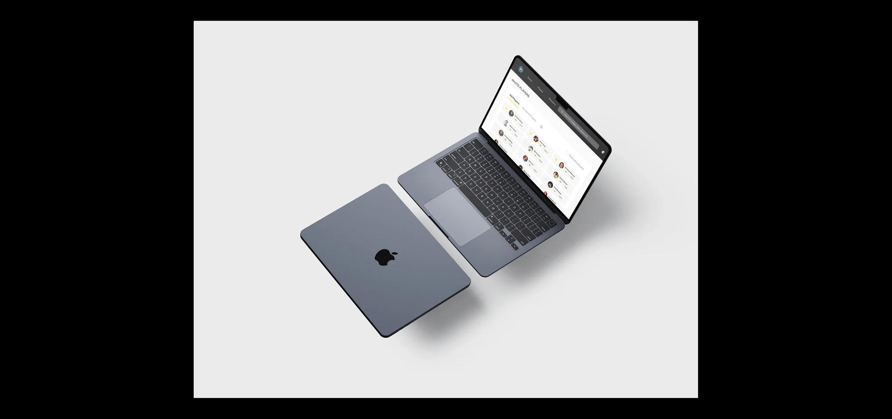
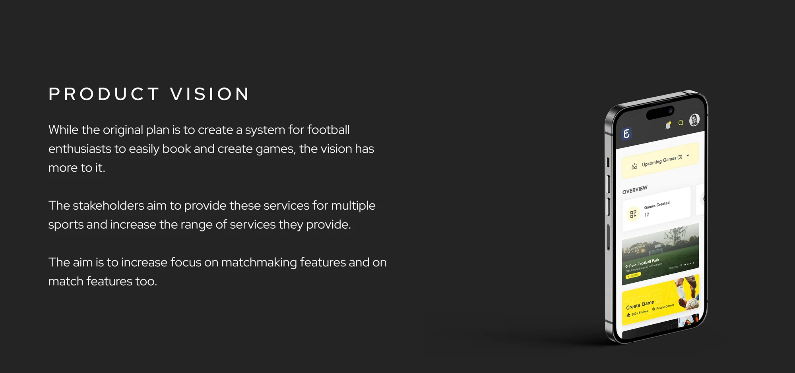
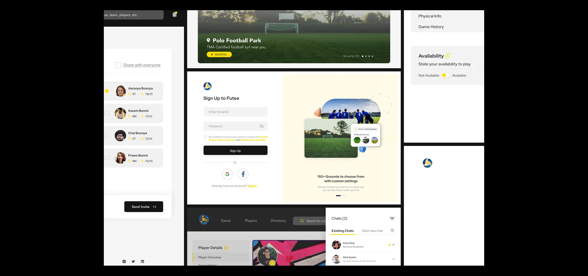
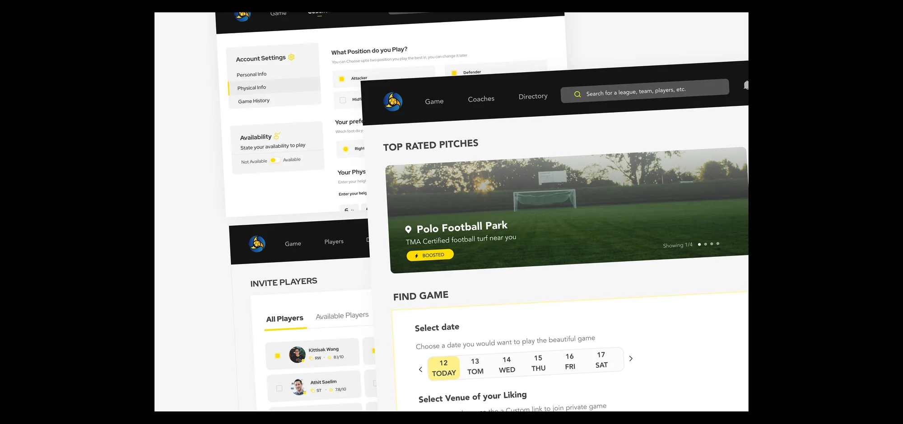

07 In Context
Designed across the whole surface.
From a full onboarding flow to responsive web — one system, holding together at every size.


Case Study — Product Design
A football matchmaking platform for Bangkok — where players create games, book grounds, rate teammates, and fill an empty spot in the lineup without a group chat full of maybes.
Casual footballers in Bangkok wanted the same thing every week: a good game, on a decent pitch, with players at their level. Getting there meant juggling group chats, chasing no-shows, and guessing whether the ten people who said "maybe" would actually turn up.
Futee set out to replace that scramble with a single platform — one where you create a match, pick a ground, invite rated players, and know the game is really happening.
Organising a match was fragmented and unreliable. Grounds were booked over the phone, players were rounded up in chats, and quality was pot luck — you never knew who'd show or how they'd play.
One place to create and customise games, book from 150+ grounds, and invite players with visible ratings and positions — so every match is set up to be worth showing up for.
The brief was to help football enthusiasts book and create games — but the stakeholders were thinking bigger. Futee was designed as the first sport on a platform meant to grow into many, with matchmaking at its core rather than bolted on.
Every decision balanced two horizons: ship something footballers love now, and leave room for the platform it's meant to become.

Designing for the Thai market meant I couldn't lean on assumptions. The process moved deliberately from listening to building — each phase feeding the next. Tap a phase.
Futee has two very different users — the person creating a game and the person looking to join one. I mapped each as its own persona and journey, so the product could serve both without compromise.
Organises the match — needs to book a ground, set the format, and fill the roster with players at the right level, fast and without chasing.
Wants a good game near them at their level — to browse open games, see who's playing, and join a match worth showing up for.
Ink-black surfaces, a signal yellow that does the work of a floodlight, and warm cream panels to soften the utility. The UI leans into football's energy without drowning the core tasks — booking, creating, inviting.

The heart of Futee. Pick a date on a fast horizontal selector, choose a venue you like or drop a custom pitch, and browse open games nearby — each showing time, location, and how many spots are left.
Top-rated pitches sit up top with a boosted badge, and filters keep the search honest to what you actually want.

From a full onboarding flow to responsive web — one system, holding together at every size.

Grounding the work in local research — not assumptions — produced a matchmaking experience that felt native to how people in Bangkok actually organise football. The design system was built to carry Futee beyond its first sport, ready for the platform it was always meant to become.